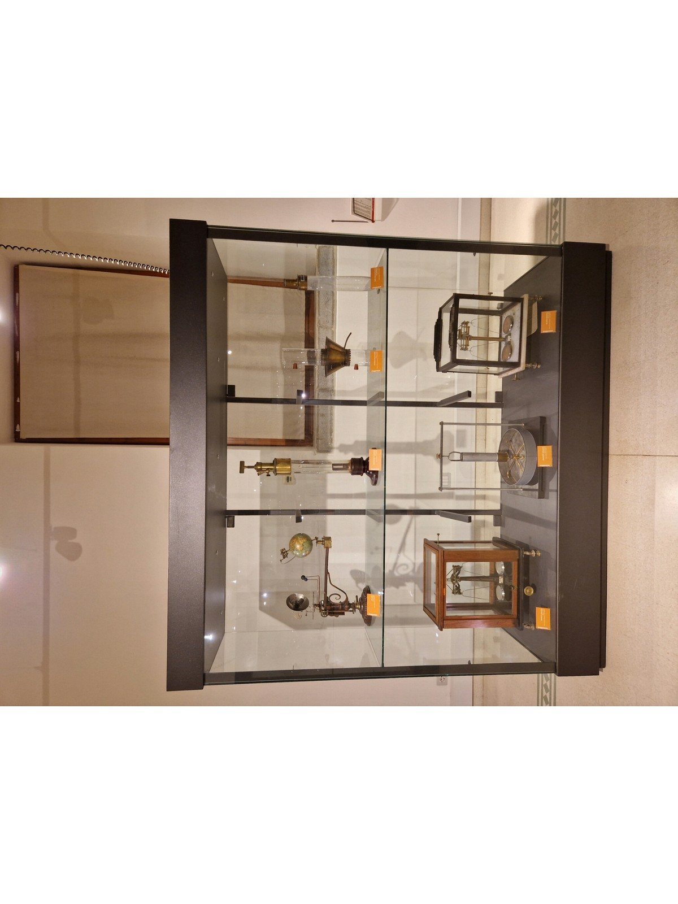

Meccanica #3

Qui sono raccolti strumenti per esperimenti di fisica dei fluidi, idraulica e astronomia didattica. Il tubo per il Diavoletto di Cartesio mostra gli effetti della pressione dell’aria, l’apparecchio di Hope serve a studiare la densità dell’acqua, e il piezometro di Oersted misura la pressione dei liquidi. Il tellurio rappresenta il moto Terra–Sole–Luna, mentre l’arganetto idraulico e la bilancia analitica sono utilizzati per dimostrazioni di equilibrio e pesata di precisione.
Qui puoi trovare: